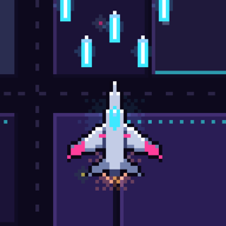

Pixel Wing Support
Need help? Email jiezhou0731@gmail.com and include your device model and iOS version. We usually reply within two business days.
How do I play?
Drag anywhere to fly. Your plane fires automatically. Shoot down enemy waves, collect gems to level up, and pick one of three upgrades each level. Survive three minutes to face the chapter boss.
How do weapons evolve?
Raise a weapon to max level while owning its paired passive, and the next upgrade offers its evolution. For example, Vulcan plus Overclock becomes the Storm Gatling.
Where is my progress saved?
On your device only. Deleting the game deletes your progress, and it does not carry over to other devices (except purchases restored as described below).
I bought something but didn't get it
Close and reopen the game. Purchases that were interrupted are delivered automatically the next time the game starts.
I reinstalled or got a new device
Open the 商店 (Shop) tab and tap 恢复购买 (Restore Purchases). This restores the Starter Pack's Spectre plane and Double Gold. Gems, gold and other progress can't be restored.
Refunds
Payments are handled by Apple. Request a refund at reportaproblem.apple.com.
Language
The game is in Simplified Chinese, with English names for chapters and planes.
Privacy
The game collects no personal data. See the Privacy Policy.